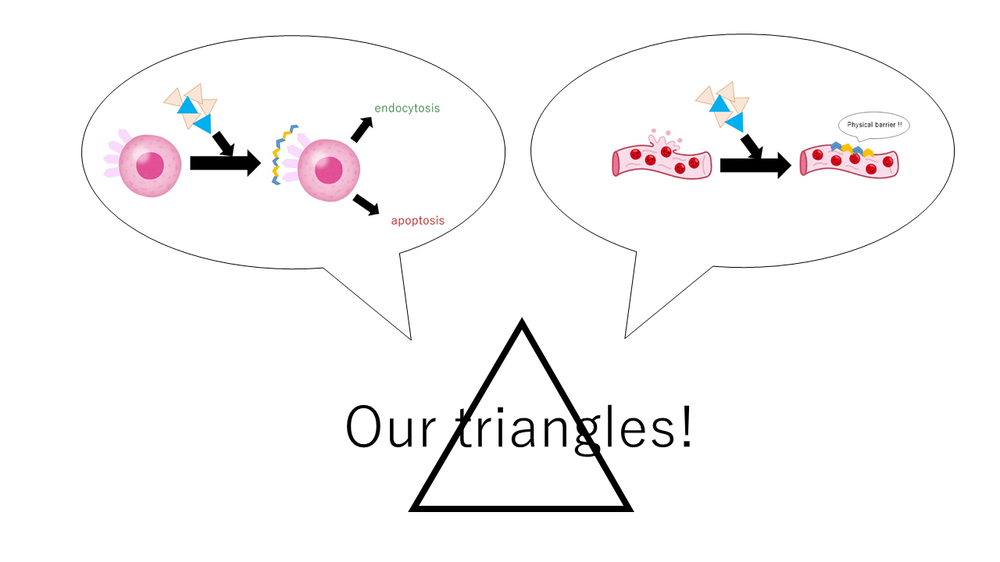

Future and elsi
Future
The project is still really young and we believe that there can be a lot of improvements regarding the mecahnism, along with the structure of nanorobots. For example, the triangles will be able to transmit signals to cells. Cell has a lot of receptors, and Each receptor controls the dynamics of cells. By equipping the triangles with the corresponding ligand or antagonist, we can turn signals on and off. Another example is that we will be able to use the triangles as physical barriers. When very tiny blood vessel is broken, normal medicine cannot cure it. Our triangles, however, will be able to stop bleeding. This future is very far from now, but we believe that it will be realized.

ELSI (ethical, legal, and social implications)
As with every technological innovation, there are bound to be issues regarding ethical, legal, and social implications that should be addressed.
During the process of creating the DNA structures, buffers and different kinds of reagents were used. Some of the buffer solutions might have leaked into the drainage system, these wastes might potentially be harmful to the environment. Not only that, the structure might be modified to contain several modifications that might have dangers and thus waste management should be considered.
In the process of making, the folding of DNA is not always perfect 100% of the time, this faulty in DNA folding might give rise to completely different structures. These faulty structures, might possibly have unexpected features that end up being harmful to other objects in the environment.